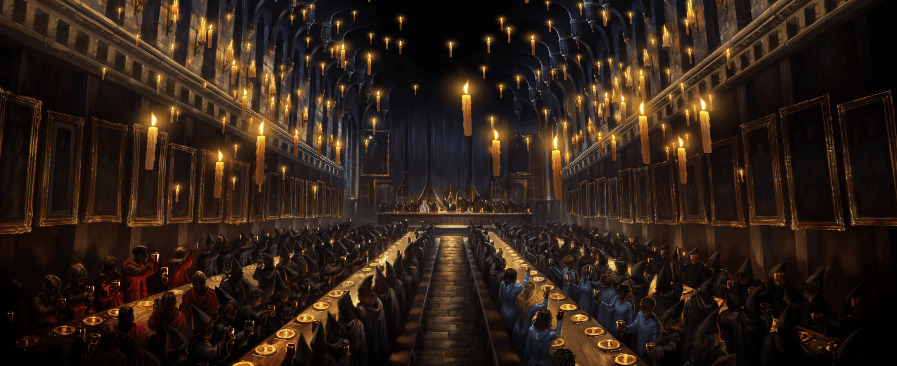
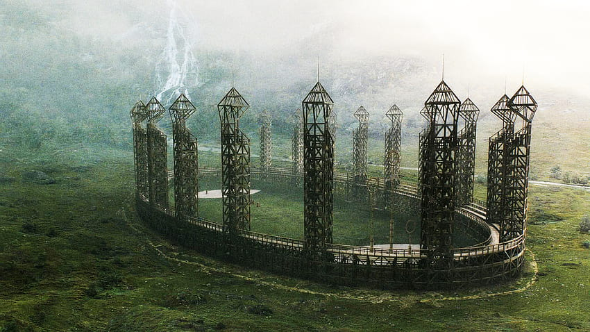
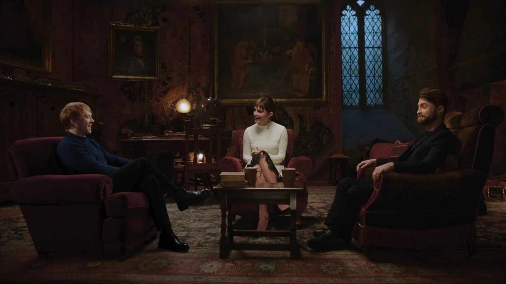
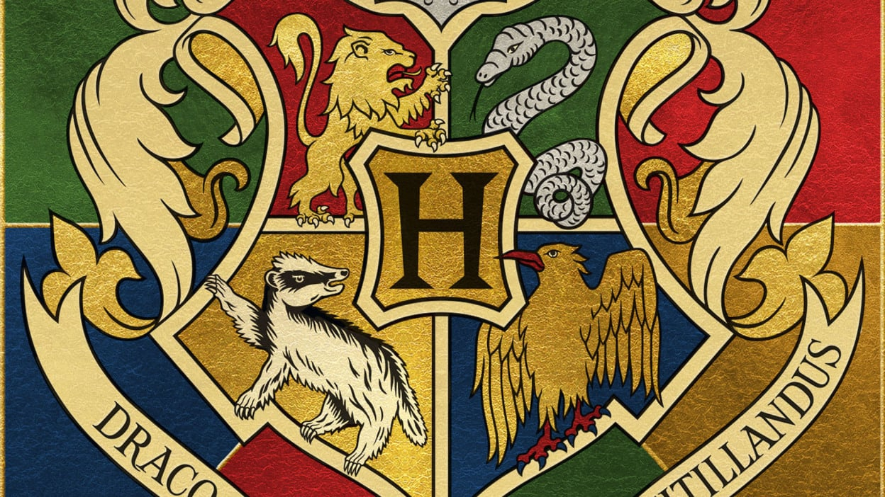

Hogwarts College Library: Unveiling the Mysteries of the Magical Realm
The Hogwarts Library is a treasured sanctuary of knowledge, offering an extensive assortment of magical tomes, spellbooks, reference materials, and historical texts. It stands as a hallowed haven for students seeking quietude and an environment conducive to focused study and research. With its towering shelves filled with ancient volumes, the library exudes an aura of wisdom and enchantment. Here, curious minds can delve into the secrets of the wizarding world, uncover forgotten spells, and explore the rich tapestry of magical history. From the soft glow of enchanted candles to the gentle rustle of pages turning, the library provides a peaceful refuge for seekers of magical wisdom.

The Great Hall of Hogwarts: Where Magic, Feasts, and Endless Wonders Unfold
The Great Hall of Hogwarts, an awe-inspiring masterpiece, stands as the heart of the wizarding world's most renowned school. With its soaring enchanted ceiling, adorned with stars that mimic the night sky, and flickering candles floating above long tables, it exudes an atmosphere of grandeur and mystique. As students gather, the hall transforms into a magnificent banquet hall, serving sumptuous feasts prepared by house-elves. The hall resonates with laughter, camaraderie, and animated conversations, making it a cherished place for forging friendships and creating lasting memories. Every year, the Sorting Hat ritual commences here, ushering new students into their respective houses. It is an enchanting space where the spirit of magic and unity intertwine, setting the stage for extraordinary adventures to come

The Quidditch Pitch at Hogwarts: Soaring High in the Skies of Sporting Excellence
At Hogwarts, the Quidditch Pitch stands as a thrilling arena where students take flight on broomsticks, competing in the exhilarating wizarding sport of Quidditch. Nestled within the castle grounds, this expansive field showcases the four soaring goal hoops on each end, representing the houses of Gryffindor, Hufflepuff, Ravenclaw, and Slytherin. As teams engage in heart-pounding matches, spectators cheer fervently, witnessing the daring chasers, agile beaters, and the lightning-fast seeker. The pitch echoes with cheers, gasps, and the roar of the crowd, creating an electrifying ambiance. Amidst the daring dives and soaring plays, the Quidditch Pitch embodies the spirit of sportsmanship and camaraderie, uniting the Hogwarts community in thrilling aerial feats

The Common Room at Hogwarts: Where House Unity and Magical Bonding Flourish
Hogwarts boasts enchanting Common Rooms, each unique to its respective house, serving as a sanctuary for students to unwind and connect. Adorned with house colors and adorned with magical decor, these cozy spaces radiate a sense of belonging and warmth. Here, students gather to share laughter, stories, and experiences, forging lifelong friendships among housemates. The Common Rooms become the stage for lively discussions, shared study sessions, and impromptu celebrations after triumphant Quidditch victories. As the hearth crackles and enchanted portraits observe, the Common Room becomes a cherished space for house unity, fostering an atmosphere where magic intertwines with the bonds that last far beyond their years at Hogwarts
Magical Classes at Hogwarts: Unveiling the Secrets of the Wizarding World
Hogwarts University offers an array of captivating magical classes, each designed to nurture young witches and wizards into skilled practitioners of the arcane arts. From the intricate potion-making in the dungeons with the guidance of the venerable Potions Master to the dazzling charms and spellwork in the vibrant classrooms of Charms, students embark on a journey of wonder and discovery. Transfiguration, where objects metamorphose at the wave of a wand, and Defense Against the Dark Arts, preparing students to face the perils of the wizarding realm, are among the many enchanting subjects offered. The classrooms resonate with excitement and curiosity as students unlock the secrets of the magical world, igniting the spark of knowledge that will shape their wizarding destinies

"The Legendary Houses of Hogwarts: Embracing Virtues and Forging Magical Bonds
At Hogwarts, the esteemed school of witchcraft and wizardry, students are sorted into four legendary houses, each embodying unique virtues and qualities. The Sorting Hat, a magical artifact, selects the perfect house for each new student based on their traits and potential. Gryffindor, known for bravery and chivalry, values courage and daring above all else. Hufflepuff, with its unwavering loyalty and fairness, treasures the qualities of kindness and hard work. Ravenclaw, the house of wisdom and intelligence, celebrates those with a thirst for knowledge and creativity. Slytherin, renowned for its cunning and ambition, seeks students who strive for greatness and resourcefulness. As students embark on their Hogwarts journey, their house becomes a second family, shaping their friendships and experiences throughout their magical education